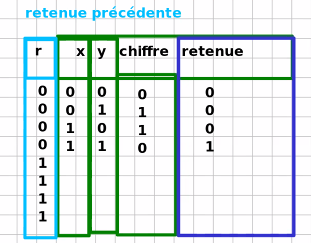
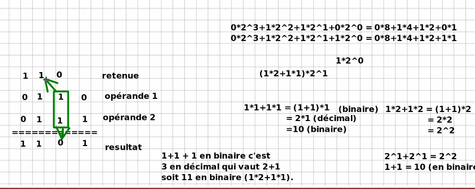

En calcul binaire
" la vidéo et l'audio ne s'affichent pas ce sont tous les 2 des liens qui viennent de youtube. De meme pour ma source elle ne s'affiche pas lorsque je passe le curseur dessus"  
<src="https://www.youtube.com/watch?v=ufkWAA5HI5E&ab_channel=Lameilleuremusiqueinstrumentale" type="video/mp4">